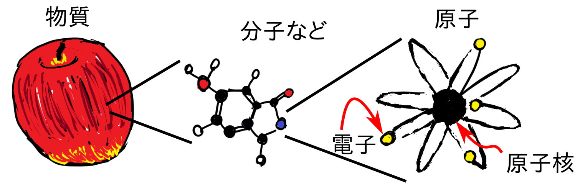
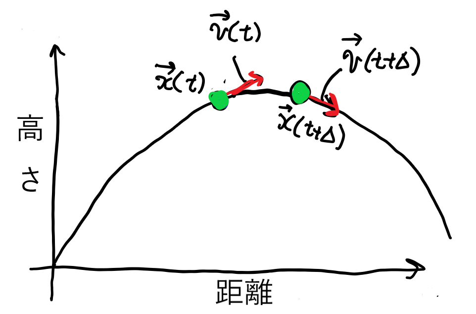

物質のシミュレーションとは
物質の性質(物性)と電子の動き
アルミニウムが電気を通す、鉄は磁石にくっつく、砂糖は甘い・・・、などの個々の物質の性質はどのようにして決まるのでしょうか？
ここで、物質の中で規則的に並んでいる原子核と、もう一つの構成要素「電子」が関係してきます。

電子はある物質の中である原子からある原子へ、と飛び回ったり、同じ原子の周りにとどまったりしています。
この電子の動きが物質の性質の大半を決めているのです！
電子は放り投げられたボールが放物線を描いて飛ぶように、物理の法則にしたがって動きます。

物理法則は多くの場合「方程式」の形で表されます。
この場合は、
\[
\vec{x}(t+\Delta) = \vec{x}(t) + \vec{v}(t) \Delta
\\
\vec{v}(t+\Delta) = \vec{v}(t) + \frac{\vec{F} \Delta}{m}
\]
という連立方程式になります。これはニュートン方程式と呼ばれます。
$\vec{x}$は位置のベクトル、$\vec{v}$は速度のベクトルで、ともに時刻$t$の関数です。
また, $m$はボールの質量で$\vec{F}$は重力や空気抵抗などのボールにかかる力です。
このニュートン方程式の右辺は現在(時刻$t$)の位置や速度の式になっており、
ここから左辺にある近い将来(時刻$t+\Delta$)の位置や速度を計算できます。
これを人間の代わりにコンピューターが繰り返し計算して時間を進めて、将来のボールの軌道を予測するわけです。
物質中の電子の運動を表す物理法則は、ボールの時とは少し異なります。
ボールの時のような、ある時刻での位置や速度の代わりに「波動関数$\vec{\psi}$」を計算する方程式
\[
{\hat H} \vec{\psi} = E \vec{\psi}
\]
が電子の物理法則を表します。この方程式はシュレーディンガー方程式と呼ばれます。
$E$は電子のエネルギーを表します。
${\hat H}$に関する説明は非常に複雑なので省略しますが、ここには「どの原子がどのような形で配置されて結晶になっているか」という条件が入っています。
つまり「アルミニウムの${\hat H}$」や「砂糖の${\hat H}$」のように物質によってことなる${\hat H}$が使われるわけです。
私たち物性理論の研究者(の一部)が物質のシミュレーションを行うときには、
- コンピューターの中に物質の構造を再現し
- その構造に応じた${\hat H}$を作り
- シュレーディンガー方程式を解いて
- その中の電子や原子の動きをシミュレーションする
というようなことをしています。
フェルミ面
シュレーディンガー方程式を解いて波動関数$\vec{\psi}$を求めたら、
そこから「電気を流す」、「磁石につく」などの性質を予測する研究をしています。
これにはいろいろなグラフを描いてみたりしてそれをにらんであーでもない、こーでもないと議論したりするのですが、
そのようなグラフの一つが「フェルミ面」です。
計算した物質が金属ならば、以下のようなフェルミ面のグラフが描けます。これはアルミニウムのフェルミ面です。

チタンでは次のようになります。

これを見てすぐに物性がどうだと言えるわけではないのですが、何らかのインスピレーションを得たりします。
形が面白いので見て楽しむこともできます。
フェルミ面図鑑
実際にいろいろな物質のフェルミ面を見て楽しみたい場合にはこちらのフェルミ面図鑑を使うのが良いでしょう。
この下にある図鑑のファイルは、以下の「FermiSurfer」というアプリを使って見ることができます。
使い方はこちらのYouTube動画をご覧ください。ダウンロードの部分は飛ばしてOKです。
以下、画像が大量にあるので、スマホ回線を使っている場合にはネットワーク通信量にご注意ください。
画像をクリックしてダウンロードしたファイルを上記FermiSurferアプリで開いて、マウスやタッチパネルでグリグリ動かしたりできます。
Ag - Al2Fe2Nd6S14
Al2Fe2Pr6S14 - As2Fe2Rb
As2Fe2Sr - Au7Rb3
Au7Rb4Sn2 - B6Cr2Sm
B6Cr3Ir6Ti3 - Ba4S16Tm8
Ba4S16Yb8 - CEr2Fe2Si2
CEr2N2O2 - Ca2Ge4Ni2O12
Ca2Ge4Pt4 - Ce3Mn4Sn4
Ce3Ni2Si8 - CoV
CoW - Cr2Ge2Te6
Cr2Ge4Li2O2 - Cu2Hf10Pb6
Cu2Hf10Sb6 - Dy8S16Sr4
Dy8S16Zn4 - Fe2O16
Fe2O16 - GaRhTi
GaRhZr2 - Ge3NiSr
Ge3Os3Sc3 - Hg6Ho2
Hg6La2 - KNdTe2
KNiO9P3 - Mg2S8Yb4
Mg2Sb2Yb - NaNdSe2
NaNiO2 - O2Rh4Tb4
O2Rh8 - Pt3V
Pt3V - W
W10Zr6 - Zr3